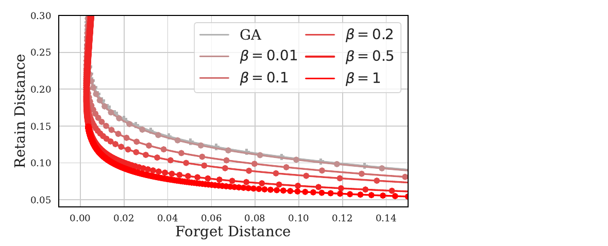
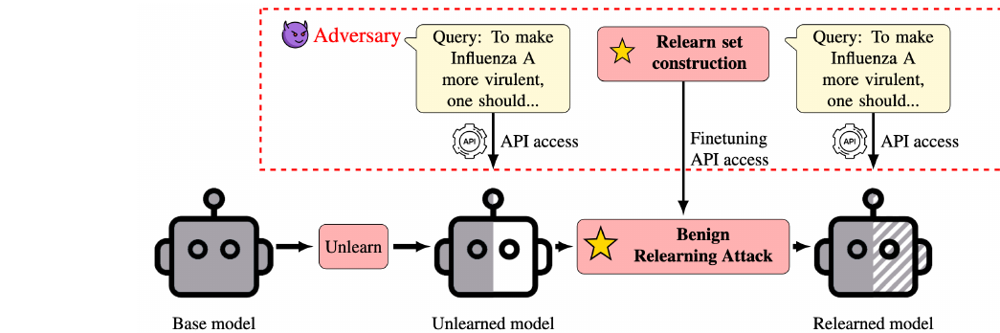
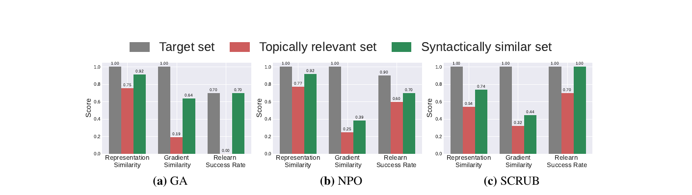
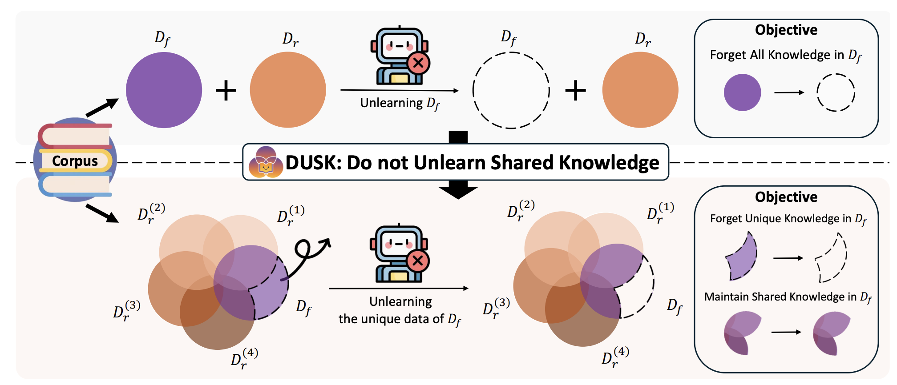

Unlearning in
Large Language Models
Why the certificate does not transfer, and what the benchmarks measure instead
Albert No · Yonsei University
2026
Contents — Part II
Why the Guarantee Does Not Transfer
Four properties of LLM training, and the assumption each one destroys
What the Certificate Bought Us
The certified story was a chain, and every link needed a hypothesis.
This section shows that a language model breaks the chain at four separate links.
The conclusion is not a slogan. It is a proposition with four proved clauses.
Recall — Certified Unlearning
Definition (certified unlearning).
$\mathcal{U}$ is $(\varepsilon,\delta)$-certified for $\mathcal{A}$ if for every $D$, every $z\in D$, every measurable $S \subseteq \Theta$,
and the same bound with the two sides exchanged.
The reference object is $\mathcal{A}(D\setminus\{z\})$. Keep that in view.
Recall — What Made It Provable
Three hypotheses on the per-example loss $\ell(\cdot;z)$ and the objective $F(\cdot;D)$:
- A1. $\ell(\cdot;z)$ convex and $G$-Lipschitz for every $z$
- A2. $F(\cdot;D)$ is $\lambda$-strongly convex, so $\theta^\star(D)$ is a unique point
- A3. $\nabla^2 F$ is $M$-Lipschitz
They gave a residual of order $MG^2/(2\lambda^3 n^2)$ and a sensitivity of order $2G/(\lambda n)$.
Two Hypotheses Nobody States
The definition carries two more, hidden in the notation.
A4 — the request is an index
Deletion names an index $z\in D$, or a subset $S\subseteq D$: a row of a table.
A5 — the release is $\theta$
The comparison is between laws on $\Theta$. Success is judged on weights.
True of a logistic regression fit. False of a deployed language model.
A request names a fact, not a row. A release is behaviour, not a weight vector.
Four Properties of LLM Training
- P1. The objective is non-convex, with exact symmetries
- P2. The request names a concept, not a set of rows
- P3. Training is roughly one pass over an enormous corpus
- P4. The product is a generator, judged on its text
Each destroys a different assumption. We take them in order.
The Assumption Map
P1 — Non-convexity Removes the Target
A network with $h$ hidden units carries an exact permutation symmetry. For any $P \in S_h$,
So minimisers come in orbits of size up to $h!$. The point $\theta_{-z}$ does not exist.
Strong convexity fails with $\lambda = 0$, and the residual bound $MG^2/(2\lambda^3n^2)$ is infinite.
P1 — The Newton Step Can Point Uphill
Diagonalise $H = \nabla^2 F(\theta) = \sum_i \mu_i v_iv_i^\top$ and write $g_i = \langle \nabla F(\theta), v_i\rangle$. The Newton step is
Each negative eigenvalue contributes a positive term. At a saddle the step ascends.
Under A2 every $\mu_i \ge \lambda \gt 0$, so the sum is negative. That is what A2 was for.
P2 — The Request Names a Concept
A real request is a predicate $\varphi$ on documents, not a list of row indices.
What A4 assumes
$S \subseteq D$ is given. Enumerable, auditable, finite.
What is asked
Forget a person, a book, a hazard class. Induced set $S_\varphi = \{z \in D : \varphi(z)\}$.
The goal was stated by the authors of the Harry Potter study as breaking a link between entities.
Proposition 1 — Exact Deletion Misses the Concept
Proposition 1.
Fix a target completion event $E$. Suppose $\Pr[\,\mathcal{A}(D\setminus S_\varphi) \text{ emits } E\,] = q$. If $\mathcal{U}$ is exactly unlearning for $S_\varphi$, then the released model emits $E$ with probability exactly $q$.
Proof. Exactness means $\theta_u \stackrel{d}{=} \mathcal{A}(D\setminus S_\varphi)$. The emission probability is a fixed measurable functional of the law of $\theta_u$. Equal laws give equal values. $\blacksquare$
Reading Proposition 1
- Whenever $q$ is large, the ideal target is already a failure.
- $q$ is large exactly when the concept is inferable from the rest of the corpus.
- Harry Potter, anatomy, virology: all inferable from $D \setminus S_\varphi$.
Concept removal is not a harder version of deletion. It is a different objective.
No amount of algorithmic effort closes a gap that the reference model also has.
P3 — One Pass, One Gradient
Run SGD once through $z_1,\dots,z_n$ with steps $\eta_t$. Let $\theta_T'$ be the same run with the update at index $j$ skipped, all other randomness held fixed.
Lemma 2 (displacement budget).
If $\lVert\nabla\ell\rVert \le G$ and every gradient map $\theta \mapsto \theta - \eta_t\nabla\ell(\theta;z_t)$ is $c$-expansive, then
Proof of Lemma 2
The two runs are identical for $t \lt j$, so $\theta_{j-1} = \theta_{j-1}'$. At step $j$ one run moves and the other does not:
For $t \gt j$ both runs apply the same map to their own iterate, so the gap multiplies by at most $c$ each step. Induction over the remaining $T-j$ steps gives the claim. $\blacksquare$
The Dichotomy Hidden in $c$
For $\beta$-smooth $\ell$ the constant is $c = 1+\eta\beta$ in general, and $c = 1$ when $\ell$ is also convex and $\eta \le 2/\beta$.
Convex, $c=1$
Influence is at most $\eta_j G$. Tiny, and below seed-to-seed variability.
Non-convex, $c \gt 1$
Bound grows like $e^{\eta\beta(T-j)}$. Vacuous long before the pass ends.
Either the influence is unmeasurable, or the bound on it is worthless. P1 chooses the second.
P4 — Deletion Is Judged on Text
Let $\Gamma_\theta$ be the law of a generation from $\theta$ under a fixed decoding rule. Users, auditors and benchmarks see $\Gamma_\theta$, never $\theta$.
Lemma 3 (one-way transfer).
Let $P_u,P_r$ be the laws of $\theta_u,\theta_r$ on $\Theta$. Then $\mathrm{TV}(\Gamma_{\theta_u},\Gamma_{\theta_r}) \le \mathrm{TV}(P_u,P_r)$, and the inequality can be strict.
Proof. $\theta \mapsto \Gamma_\theta$ is a Markov kernel, so this is data processing. Strictness: permutation-symmetric $\theta \ne P\!\cdot\!\theta$ have identical $\Gamma$. $\blacksquare$
The Direction That Fails
Closeness on $\Theta$ implies closeness on text. Closeness on text implies nothing on $\Theta$.
Proposition 4 — The Certificate Does Not Transfer
Proposition 4.
For a transformer trained by one-pass SGD on a web corpus, under a concept-level request:
- (i) A2 fails, and the Newton residual bound is vacuous;
- (ii) the Newton direction is not a descent direction;
- (iii) the influence bound of Lemma 2 is exponential in $T-j$;
- (iv) output-level agreement does not certify parameter-level closeness.
Proof of Proposition 4
- (i) Permutation symmetry gives a non-singleton minimiser orbit, so $\lambda=0$ and $MG^2/(2\lambda^3n^2)=\infty$.
- (ii) At a point with $\mu_i \lt 0$ the inner product $-\sum_i g_i^2/\mu_i$ is positive.
- (iii) Lemma 2 with $c = 1+\eta\beta \gt 1$, since convexity is unavailable by (i).
- (iv) Lemma 3 is one-directional, with equality failing on symmetry orbits. $\blacksquare$
Four independent failures. Repairing one leaves the other three.
What Survives
Proposition 4 kills the method, not the vocabulary.
Still available
The definition, the hypothesis-test frame, the total-variation ceiling, exact retraining.
No longer available
Influence functions, one Newton step, calibrated Gaussian noise, deletion capacity.
Everything in Section 02 is therefore a heuristic. That is a statement of fact, not a complaint.
Section 01 — Where We Stand
- The reference model $\mathcal{A}(D\setminus S)$ is undefined as a point, and wrong as a goal.
- Per-example influence is either negligible or exponentially amplified.
- Evidence arrives in output space, where it cannot certify anything.
So the design question becomes: what objective is safe to minimise?
Objectives — From Collapse to Bounded Forgetting
One template, one weight function, and everything follows
The Design Problem
Given a trained $\pi_{\mathrm{ref}}$, a forget set $\mathcal{D}_f$ and a retain set $\mathcal{D}_r$, find $\theta$ minimising
Write $\ell_\theta(x,y) = \log\pi_\theta(y\mid x)$ for the sequence log-likelihood.
The whole section is a study of one question: how should $\mathcal{L}_{\mathrm{forget}}$ behave once forgetting has succeeded?
Gradient Ascent
Definition (gradient ascent, GA).
Minimise the log-likelihood of what should be forgotten. The obvious first idea.
Equivalently: run the pretraining loss with a flipped sign on $\mathcal{D}_f$.
Proposition 5 — GA Has No Optimum
Proposition 5.
If the model class can drive $\pi_\theta(y\mid x)\to 0$ for some $(x,y)\in\mathcal{D}_f$, then $\inf_\theta \mathcal{L}_{\mathrm{GA}}(\theta) = -\infty$, and the infimum is not attained.
Proof. Fix such a sequence $\theta_k$ with $\pi_{\theta_k}(y\mid x)\to 0$. Then $\ell_{\theta_k}(x,y)\to-\infty$, and the remaining terms of the average are bounded above by $0$. So $\mathcal{L}_{\mathrm{GA}}(\theta_k)\to-\infty$. No $\theta$ attains $-\infty$ since $\ell_\theta \gt -\infty$ pointwise. $\blacksquare$
Why That Matters in Practice
An objective with no minimiser gives the optimiser no reason to stop.
What we wanted
Move $\pi_\theta$ off $\mathcal{D}_f$, then hold position.
What GA does
Keeps pushing after the forget set is already gone, at undiminished strength.
The damage lands on $\mathcal{D}_r$, because there is no separate parameter direction reserved for $\mathcal{D}_f$.
Theorem 6 — Divergence Rates
Two-token model: $\pi_\theta(y\mid x)=\sigma(\theta)$, $\theta\in\mathbb{R}$, one forget example, gradient flow $\dot\theta=-\nabla\mathcal{L}$.
Theorem 6.
Under GA, $\theta(t) = -t\,(1+o(1))$. Under NPO with parameter $\beta \gt 0$, $\theta(t) = -\tfrac1\beta \log t\,(1+o(1))$.
Linear divergence against logarithmic divergence, from the same starting point.
Recall — Direct Preference Optimization
Given a preferred $y_w$ and a rejected $y_l$, write $r_\theta(y) = \log\dfrac{\pi_\theta(y\mid x)}{\pi_{\mathrm{ref}}(y\mid x)}$. DPO minimises
Two branches: raise the winner, lower the loser, both relative to $\pi_{\mathrm{ref}}$.
NPO — Delete the Positive Branch
In unlearning there is no preferred answer — only a rejected one. Drop $y_w$:
The factor $2/\beta$ is a normalisation whose purpose the next two results make clear.
Theorem 7 — NPO Is Self-Limiting
Theorem 7.
- (i) $\mathcal{L}_{\mathrm{NPO}}(\theta) \gt 0$ for every $\theta$, and $\inf_\theta\mathcal{L}_{\mathrm{NPO}} = 0$.
- (ii) $\nabla\mathcal{L}_{\mathrm{NPO}} = \mathbb{E}\big[\,w_\theta\,\nabla_\theta \ell_\theta(x,y)\big]$ with $w_\theta = 2\sigma(\beta r_\theta) \in (0,2)$.
- (iii) $w_\theta \le 2\big(\pi_\theta(y\mid x)/\pi_{\mathrm{ref}}(y\mid x)\big)^{\beta}$.
Bounded below, bounded gradient weight, and the weight vanishes exactly when forgetting succeeds.
Proof of Theorem 7
(i) $\log(1+e^{u}) \gt 0$ for all real $u$, and $\log(1+e^u)\to 0$ as $u\to-\infty$. Take $\pi_\theta(y\mid x)\to0$, so $r_\theta\to-\infty$.
(ii) Since $\tfrac{d}{du}\log\sigma(u)=\sigma(-u)$ and $\nabla_\theta r_\theta = \nabla_\theta \ell_\theta$,
(iii) $\sigma(u) = e^u/(1+e^u) \le e^u$, so $2\sigma(\beta r_\theta)\le 2e^{\beta r_\theta}$, which is the stated ratio. $\blacksquare$
The Whole Difference, in One Line
Both methods take the same step direction. They differ only in how hard they push.
GA's pressure is constant. NPO's decays like $(\pi_\theta/\pi_{\mathrm{ref}})^\beta$ — a built-in brake.
Everything downstream — stability, retain damage, relearning — follows from this one factor.
The Brake, Drawn
Catastrophic Collapse, Measured

GA drives forget quality and retain quality down together. NPO separates them.
Proposition 8 — NPO Contains GA
Proposition 8.
As $\beta\to0^+$, with $c_\beta = 2\log 2/\beta$ a constant independent of $\theta$,
So the $\beta\to0$ limit of NPO is GA, and the first correction penalises drift from $\pi_{\mathrm{ref}}$.
Proof of Proposition 8
Let $g(u)=\log(1+e^u)$. Then $g(0)=\log 2$, $g'(u)=\sigma(u)$ so $g'(0)=\tfrac12$, and $g''(u)=\sigma(u)(1-\sigma(u))$ so $g''(0)=\tfrac14$. Taylor at $u=\beta r_\theta$:
Take expectations and use $r_\theta = \ell_\theta - \log\pi_{\mathrm{ref}}$. For the gradients, $w_\theta = 2\sigma(\beta r_\theta)\to 2\sigma(0)=1$. $\blacksquare$
What $\beta$ Buys
Proposition 8 and Theorem 6 read the same parameter from two directions.
$\beta$ small
Weight stays near $1$. Fast forgetting, GA-like collapse, weak reference anchor.
$\beta$ large
Weight decays quickly. Gentle, stable, and slow — divergence rate $\tfrac1\beta\log t$.
It is a forgetting-versus-utility dial, not a nuisance hyperparameter.
The Dial, Measured

Each $\beta$ picks a point on a forget-quality against utility frontier.
Two Complaints About NPO
Cost
$\pi_{\mathrm{ref}}$ is needed at every step: a second forward pass, a second copy in memory.
Bias
The weight uses the sequence log-ratio, so it scales with response length.
The first is an engineering complaint. The second is a theorem, and it is next.
Proposition 9 — NPO Is Length-Biased
Proposition 9.
Suppose two forget examples share a per-token log-ratio $\rho \lt 0$, so $r_\theta(y) = \lvert y\rvert\,\rho$. Then their NPO gradient weights satisfy
Proof. Theorem 7(ii) gives $w_\theta(y)=2\sigma(\beta\lvert y\rvert\rho)$, and $\sigma(u)\sim e^{u}$ as $u\to-\infty$. Divide. $\blacksquare$
Reading Proposition 9
Equally forgotten per token, the longer response receives exponentially less gradient.
- The brake fires on length, not on progress. Two of Theorem 7's virtues fight each other.
- Long forget targets — paragraphs, biographies, book passages — stall first.
- Short targets keep receiving full pressure, so retain damage concentrates there.
The fix is to divide by $\lvert y\rvert$ before the sigmoid, not after.
SimNPO — Normalise and Drop the Reference
Definition (SimNPO).
Gradient weight $w_\theta = \dfrac{2}{\lvert y\rvert}\,\sigma\!\left(\dfrac{\beta}{\lvert y\rvert}\ell_\theta + \gamma\right)$: self-limiting, length-free, reference-free.
The margin $\gamma$ replaces $\pi_{\mathrm{ref}}$ as the reference point.
Four Other Places to Intervene
Change the target distribution
Entropy maximisation: pull $\pi_\theta(\cdot\mid x_{\lt t})$ toward uniform. Bounded optimum by construction.
Change the target string
Fine-tune the forget prompts onto a refusal, or onto text from an alternative persona.
Change internal activations
RMU: scramble hidden states at a chosen layer on forget inputs, preserve them on retain inputs.
Change the decoding-time state
Redirect activations into a refusal region rather than editing the knowledge.
Entropy Maximisation Has an Optimum
Replace the ascent term by a divergence to the uniform distribution $u$ over the vocabulary $V$:
Minimum value $0$, attained exactly at $\pi_\theta = u$. Contrast Proposition 5.
The brake is built into the target rather than into the weight. Same problem, different fix.
RMU — Intervene on Activations
Fix a layer $\ell$ with activation map $h_\theta$, draw a fixed random vector $\xi$, and set
Both terms are squared distances to fixed targets, so both are bounded below by $0$.
Proposition 10 — One Family
Proposition 10.
GA, NPO and SimNPO all have $\nabla\mathcal{L}_{\mathrm{forget}} = \mathbb{E}\big[w_\theta\,\nabla_\theta\ell_\theta\big]$, with $w_\theta$ equal to $1$, to $2\sigma(\beta r_\theta)$, and to $\tfrac{2}{\lvert y\rvert}\sigma(\tfrac{\beta}{\lvert y\rvert}\ell_\theta+\gamma)$ respectively. Among losses of the form $\mathbb{E}[\phi(\ell_\theta)]$, constant $w_\theta$ holds if and only if $\phi$ is affine, i.e. only for GA.
Proof. The three weights are the computations of Theorem 7(ii) and the SimNPO slide. For the characterisation, $w_\theta = \phi'(\ell_\theta)$ is constant iff $\phi'$ is constant. $\blacksquare$
The Design Space
Vertical axis: depth of intervention, from output logits to internal activations.
Objectives, Side by Side
| Method | Gradient weight | Bounded below | Needs a reference |
|---|---|---|---|
| GA | $1$ | no | no |
| NPO | $2\sigma(\beta r_\theta)$ | yes | yes |
| SimNPO | $\tfrac{2}{\lvert y\rvert}\sigma(\tfrac{\beta}{\lvert y\rvert}\ell_\theta+\gamma)$ | yes | no |
| ME | target is uniform | yes | no |
| RMU | target is a random vector | yes | yes, on retain |
Every post-GA method installs a brake. They disagree only about where to install it.
Section 02 — Where We Stand
- GA has no minimiser; its pressure never decays. Propositions 5 and 10.
- NPO is GA with a sigmoid brake, and recovers GA as $\beta\to0$. Theorem 7, Proposition 8.
- The brake is length-biased; SimNPO normalises it away. Proposition 9.
All of it is loss engineering. Not one line is a guarantee.
So how do we know any of it worked?
Benchmarks — What Is Actually Measured
Four suites, one shared statistic, and a validity failure
How Success Gets Declared
With no certificate available, every claim rests on a measurement. Three shapes recur:
- Indistinguishability. Compare $\theta_u$ to a retrained model on the forget set.
- Accuracy. Score $\theta_u$ on forget-topic questions; low is good.
- Adversarial probing. Try to make $\theta_u$ produce what it should not know.
The first is the only one with a hypothesis-testing interpretation. It is also the most misread.
TOFU — Fictitious Authors
200 synthetic author profiles, 20 question-answer pairs each, generated so that the base model can only know them through fine-tuning.
Why fictitious
The ground truth "never trained on this" is available. No leakage through pretraining.
The retain model
Fine-tuned on the other authors only. This is the object $\theta_u$ is compared to.
TOFU — Forget Quality
For each forget question define the truth ratio $R$, comparing the likelihood of a paraphrased correct answer with that of perturbed wrong answers.
Definition (forget quality).
Run a two-sample Kolmogorov–Smirnov test between $\{R_i(\theta_u)\}$ and $\{R_i(\theta_{\mathrm{retain}})\}$. Report the $p$-value.
High $p$ means the test could not tell the two apart. This is the reported score.
Theorem 11 — A $p$-Value Is Not a Score
Theorem 11.
Suppose unlearning is perfect, so the two truth-ratio samples are drawn from one continuous law. Then
- (i) the reported $p$ is $\mathrm{Uniform}[0,1]$; in particular $\Pr[p \ge 0.9] = 0.1$;
- (ii) if the best of $k$ runs is reported, $\mathbb{E}[p_{\max}] = k/(k+1)$ and $\Pr[p_{\max}\ge 0.9] = 1-0.9^{\,k}$.
A perfect unlearner clears a $0.9$ bar one time in ten. A tuned imperfect one clears it routinely.
Proof of Theorem 11
(i) Under the null the statistic $T$ has continuous law $F$, and $p = 1-F(T)$. The probability integral transform gives $F(T)\sim\mathrm{Uniform}[0,1]$, hence so does $p$, and $\Pr[p\ge0.9]=0.1$.
(ii) With $p_1,\dots,p_k$ independent and uniform,
Both clauses use only that the null law is continuous — nothing is specific to the KS statistic. $\blacksquare$
The score is not a measure of similarity. It is a draw from a uniform.
Selection Inflates the Score
| Runs tried | Mean reported score | Chance of clearing 0.9 |
|---|---|---|
| 1 | 0.500 | 0.100 |
| 5 | 0.833 | 0.410 |
| 10 | 0.909 | 0.651 |
| 20 | 0.952 | 0.878 |
Rows are Theorem 11(ii) at $k = 1, 5, 10, 20$ independent runs.
Choosing the best checkpoint by forget quality is a maximum over draws of a uniform.
Reading Theorem 11
- Failing to reject is not evidence of equality. It is absence of evidence.
- With 200 forget samples the KS test has low power against moderate differences.
- Low power makes high $p$ easier, so a weak test flatters a weak unlearner.
The fix is not a different threshold. It is an equivalence test, with a stated tolerance.
WMDP — Hazardous Knowledge
Roughly 4,000 multiple-choice questions in biosecurity, cybersecurity and chemical security, written as a proxy for hazardous capability.
The metric
Hazardous-set accuracy against MMLU accuracy. Down and flat is the target.
The method shipped with it
RMU, the activation-scrambling objective from Section 02.
A capability claim, scored on one multiple-choice template. Corollary 12 is the gap.
Corollary 12 — Accuracy Is Prompt-Relative
Let $A(\theta;T)$ be accuracy under prompt template $T$, and let an adversary range over templates, few-shot contexts and decoding settings.
Corollary 12.
$A(\theta;T_{\mathrm{bench}}) \;\le\; \sup_{T'} A(\theta;T')$, so a low benchmark score is necessary for capability removal and never sufficient.
Proof. The benchmark template is one element of the set the supremum ranges over. $\blacksquare$
WMDP reports the left side. Safety claims concern the right side.
RWKU — Real Knowledge, Adversarial Probes
200 real-world famous people as forget targets, with no forget corpus supplied — the request is a name, exactly the setting of P2.
Three probe forms
Fill-in-the-blank, question answering, adversarial rephrasing of the same fact.
Neighbour sets
Closely related entities, scored to expose collateral damage.
The only suite whose request format matches a real deletion demand.
Residual Knowledge Under Probing

The same model that scores well on direct questions answers rephrased ones.
MUSE — Six Axes at Once
Books and news corpora, scored on six requirements rather than one number.
Data-owner side
No verbatim memorisation, no knowledge memorisation, no privacy leakage.
Deployer side
Utility preserved, scalable to large forget sets, sustainable over sequential requests.
The Four Suites
| Suite | Forget target | Headline metric | Retrained reference |
|---|---|---|---|
| TOFU | fictitious authors | KS $p$-value | yes |
| WMDP | hazard topics | QA accuracy | no |
| RWKU | real entities | probe success | no |
| MUSE | book and news corpora | six separate scores | yes |
Only the suites with a retrained reference can even state the Part I definition.
Recall — A Validity Failure
Proposition (membership deck, Lecture 04).
Let two evaluation groups have text laws $Q_1, Q_0$, fixed by a rule not depending on $\theta$. Then
attained by a test that never queries the model.
The same argument applies whenever a score compares the forget corpus to the retain corpus.
Proposition 13 — The Split Confound
Proposition 13.
Let $M(\theta) = A_f(\theta) - A_r(\theta)$ compare performance on the forget corpus with performance on the retain corpus. If the two corpora differ in difficulty, then $M(\pi_{\mathrm{ref}}) \ne 0$ before any unlearning, and $M(\theta_u)$ conflates forgetting with that offset.
Proof. $M$ is a difference of two functionals evaluated on different distributions; equality would require the corpora to be exchangeable under $\pi_{\mathrm{ref}}$. The only estimand free of the offset is $M(\theta_u)-M(\pi_{\mathrm{ref}})$. $\blacksquare$
Which Designs Escape It
Safe
TOFU. Both branches are scored on the same forget questions; only the model changes.
Exposed
Any headline number of the form "forget accuracy minus retain accuracy", reported without a base-model row.
Hold the text fixed and vary the model. Never the reverse.
Proposition 14 — Output Metrics Are Blind
Proposition 14.
Let $\mathcal{M}$ be any metric computable from black-box samples, so $\mathcal{M}(\theta)=\Psi(\Gamma_\theta)$ for some functional $\Psi$. If $\Gamma_{\theta_1}=\Gamma_{\theta_2}$ then $\mathcal{M}(\theta_1)=\mathcal{M}(\theta_2)$, whatever the two parameter vectors encode.
Proof. Immediate: $\mathcal{M}$ factors through $\Gamma$. $\blacksquare$
Every metric in the table two slides back is of this form.
No black-box suite can separate a model that forgot from one that learned to stay quiet.
Is Proposition 14 Vacuous?
Only if suppression and deletion always differ in text. They do not.
- A hidden-layer probe recovers knowledge that generation never shows.
- A few gradient steps on unrelated text restore forget-set performance.
- Quantising the released model can undo the suppression on its own.
Section 04 turns this gap into the definition.
What the Benchmark Sees
Two parameter vectors with opposite content, one score. The map is not injective.
The Word Is Doing Too Much Work
A policy-facing position paper lists the mismatches between what regulation asks and what unlearning delivers.
- Deleting a training document does not delete the capability it taught.
- A right to erasure is about a data subject, not about a model behaviour.
- Suppressing an output is a content filter under another name.
Section 03 — Where We Stand
- The headline score of the main suite is a $p$-value, uniform under success. Theorem 11.
- Selecting the best run inflates it toward $1$ by construction.
- Accuracy is prompt-relative, and every metric factors through the output law. Corollary 12, Proposition 14.
The measurements are informative. None of them separates suppression from deletion.
Relearning, Suppression, and the Open Problem
Closure under fine-tuning as the missing definition
Two Hypotheses
A model that stops answering forget-set questions admits two explanations.
Deletion
The representation is gone. No cheap adaptation brings the behaviour back.
Suppression
The representation is intact behind a learned gate. A light touch reopens it.
Proposition 14 says no output metric separates them. So separate them by definition instead.
Definition 15 — Closure Under Adaptation
Fix a behaviour functional $B$ and an adaptation class $\mathcal{T}$: fine-tuning maps using at most $m$ steps on at most $n$ permitted examples.
Definition 15.
- $\theta_u$ suppresses the target at level $\varepsilon$ if $B(\theta_u) \le \varepsilon$.
- $\theta_u$ deletes it at level $(\varepsilon,\mathcal{T})$ if $\;\sup_{\tau\in\mathcal{T}} B(\tau(\theta_u)) \le \varepsilon$.
Deletion is suppression that survives the budget. The budget is part of the claim.
Proposition 16 — Strictly Stronger
Proposition 16.
If $\mathrm{id}\in\mathcal{T}$, deletion at level $(\varepsilon,\mathcal{T})$ implies suppression at level $\varepsilon$. The converse fails: for every $\varepsilon \gt 0$ there is a $\theta_u$ that suppresses at level $\varepsilon$ but fails deletion for a one-step $\mathcal{T}$.
Proof of the forward part. Take $\tau=\mathrm{id}$ inside the supremum. The construction is on the next slide. $\blacksquare$
Proof of Proposition 16 — The Gate
Release logits $f_{\theta_0}(x) - c\,g(x)$, with $g$ a fixed feature firing on forget prompts and $c\ge0$ one trainable scalar.
- Large $c$ gives $B(\theta_u)\le\varepsilon$. Suppression holds.
- $\theta_0$ is untouched: every original structure survives.
- One step $c \mapsto c - \eta\,\partial_c\mathcal{L}$ with $\eta$ large returns $c$ to $0$, so $B \gg \varepsilon$. $\blacksquare$
Suppression can be one coordinate deep. No output metric reveals its depth.
Corollary 17 — Attacks Are One-Sided
Corollary 17.
For any $\mathcal{T}'\subseteq\mathcal{T}$, $\;\sup_{\tau\in\mathcal{T}'}B(\tau(\theta_u)) \le \sup_{\tau\in\mathcal{T}}B(\tau(\theta_u))$. So a successful relearning attack refutes deletion, and an unsuccessful one establishes nothing.
Proof. A supremum over a subset is at most the supremum over the set. $\blacksquare$
This is the same asymmetry as cryptanalysis: attacks certify weakness, never strength.
Closure, Drawn
Benign Relearning
Unlearn a book, then fine-tune on model-generated summaries of it. The memorisation returns.

Why That Is Damning
- The relearning corpus is public, legal, and contains none of the original tokens.
- The budget is a handful of steps — well inside any realistic $\mathcal{T}$.
- By Corollary 17 this refutes deletion for the methods tested.
The knowledge was dormant, not absent. Exactly the gate of Proposition 16.
What Property Triggers Recovery?
Split the relearning corpus along two axes and the answer is not the expected one.
Same topic, new syntax
The forgotten content stays forgotten.
Same syntax, new entities
Full recovery, with no topical overlap at all.
The re-entry path is the sentence shape, not the subject matter.
Recovery Tracks Syntactic Similarity

Recovery rises with structural similarity, and stays flat in topical similarity.
Same-topic rewrites leave the content forgotten; same-shape rewrites bring it back.
A Mechanism, and a Fix
Unlearning perturbs the surface forms it was shown. A familiar syntactic frame reaches past the perturbation to a representation that was never touched.
Mitigation: diversify the syntax of forget queries during unlearning, not only their content.
DUSK — Do Not Unlearn Shared Knowledge

The Partition DUSK Enforces
Write the forget documents as $\mathcal{D}_f = U \,\dot\cup\, S$, where $S$ is the content also present in retain sources and $U$ is unique to $\mathcal{D}_f$.
Standard benchmarks score only the first condition, so a method that destroys $S$ scores well.
Forget a biography without forgetting the city the subject lived in.
R-TOFU — Two Surfaces to Leak From

What the Chain of Thought Reveals
- Answer-only unlearning leaves residue: the model refuses the answer, then reasons its way there.
- Chain-of-thought unlearning is the stronger variant — forget the reasoning, not the conclusion.
- Forcing short or empty reasoning at decoding time exposes knowledge the default decoder hides.
A second output surface is a second $\Gamma_\theta$, and Proposition 14 applies to each separately.
Are We Making Progress?
The NeurIPS 2023 unlearning competition: over a thousand submissions, fixed compute budget.
- Best entries beat naive fine-tuning by a few points on the membership gap.
- Scores saturate near the retrained reference — on the competition's own forget set.
- Transfer to different forget sets is poor.
Theorem 11's selection argument again: a score tuned on one forget set is biased for the rest.
Five Things, One Word
Reserve unlearning for the Part I definition. Give the rest honest names.
| Honest name | Methods |
|---|---|
| Output likelihood suppression | GA, NPO, SimNPO |
| Internal-representation obfuscation | RMU, activation redirection |
| Knowledge editing | targeted weight edits |
| Behavioural refusal | refusal fine-tuning, guardrails |
| Inference-time intervention | decoding-time filters |
Why the Naming Is a Safety Measure
One word lets a weak method borrow a strong word's guarantees.
Section 01 proved the guarantee is unavailable. The vocabulary should say so.
Precision in naming is the cheapest correction available, and the only one that scales.
The Open Problem
Part I had a unit of deletion: a row. An LLM corpus has none.
- Data valuation, influence functions and membership inference are three views of the same question.
- Until the unit is named, "unlearning" is not underpowered — it is ill-posed.
Takeaways
- The Part I certificate fails on four independent counts. Proposition 4.
- Every LLM objective is GA plus a brake; the brake is the whole design. Theorem 7, Proposition 10.
- Forget quality is a $p$-value, uniform under success and inflated by selection. Theorem 11.
- Deletion means closure under fine-tuning; benign relearning refutes it. Definition 15, Corollary 17.
Part I could define it and prove it. Part II can barely define it and cannot verify it.
Questions
Should regulators accept output-level audits at all?
Is exact unlearning the only honest path?
What would a unit of forgetting look like?